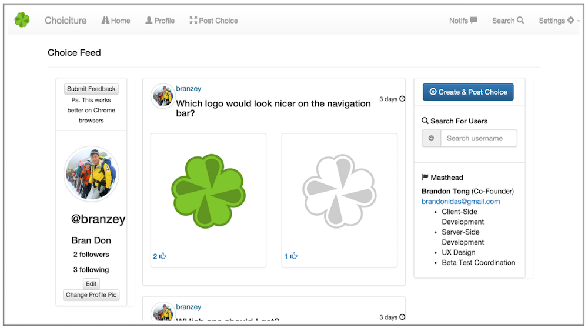

DISCLAIMER: I don't really have a lot of screenshots. This one was from a while back in 2015. It was just web-development but for me, it was first contact with programming. I learnt how to harvest online resources and dive into documentation. Auto-didactism seems to be the first step to being proficient in computer science.
Also, I've taken down the website since it is no longer in use as a project show case. Unfortunately, the code no longer seems to run even on my computer (the original development environment!). It seems in computer science libraries and packages are always evolving and change in such a way that all these seperate components become incompatible with each other without external maintenace. The code is avaible on my github for reference.
It also seems the last update to the particular MEAN.js stack I used was Version 0.5.0, 21/10/2016.
People tend to be more opinionated online than in-person. The project was simple - just like Instagram with followers and a feed but with multiple pictures displayed in a grid. If I didn't know which shirt would best on me, which was the best satay in Singapore to show some exchange students or (in the example in the screenshot) which logo would look best on the Navbar, I could just poll my friends and they would vote on it for me. 
I knew what the project needed to be but I didn't know how to get it created. So I did the research based on which 'frameworks' (which I heard from a friend was a better starting point than a 'language') had the most accessible resources for learning. I chose Angular.js first because I thought if Google made it, it must be good and well documented. They also offered a free video course on the subject which had great production value and an online IDE which pointed out both your conceptual and implementation mistakes. The course was made by CodeSchool.com.
Offered along the free Angular.js course, they offered courses on git, Node.js and Express.js as well as feature first 'podcasts' which drilled on the implementation of specific features from the UI down, for example a search bar. I consumed these without making any direct progress on the original choiciture project.
I stumbled upon MEAN.js - MongoDB, Express, Angular, Node.js. Also bootstrap.css. The particular MEAN.js stack I used had a CRUD generator end to end which included auto-generating by default a user collection with standard salting and encryption for passwords. This was very convenient but did not offer all the features I wanted.
I got a lot of the bespoke work done just by knowledge I had gained from the courses but I ended up reading a lot of source documentation too. Although some features, such as uploading of pictures, took a lot time and there are were no straightforward tutorials. I had to learn and implement solely through reading up on concepts and documentation.
Hosting was done via AWS. I had to learn about DNS, file transferring and command line operations to get the app running on a LINUX server.
I learnt a lot about web development, most of which was too mundane to mention (GET, POST, routing, uploading an image was actually incredibly painful, etc). It was a great introduction to programming though I can't say I wrote the cleanest code or the made the best possible implementation looking back 4 years as of writing this (September, 2019). And if anything, this was an exercise in self-learning.